BILATERALSTACK_BASE - Base function for fast bilateral filter.
Contents
Description
Implement a fast version of the bilateral filter introduced in [TM98] using the stacking approach of [DD02,PD09].
Algorithm
Bilateral filter by Stacking: implementing the bilateral filter directly over the spatial domain requires 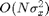 operations where N is the number of pixels (see function BILATERAL_BASE).
A fast approximate implementation exploits the fact that for all pixels 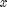 with the same range 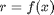, the bilateral filter can be written as a ratio of convolution:
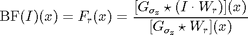
where the weight map reads 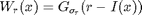
Instead of computing all possible weight maps 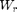 for all possible pixel values r, one considers a subset 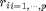 of p values and computes the weights 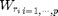. Using these convolutions, one thus optains the maps 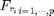 that are combined to obtain an approximation of BF(I). The computation time of the method is 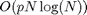 over the Fourier domain and 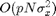 over the spatial domain.
Syntax
F = BILATERALSTACK_BASE(I, sigma_d, sigma_r); [F,S] = BILATERALSTACK_BASE(I, sigma_d, sigma_r, pstack, destack);
Inputs
I : input image.
sigma_d : standard deviation of domain filter (in pixels); sub-pixel values quantized to even fractions, i.e. in steps of 0.2.
sigma_r : standard deviation of range filter; value in range [0,1] (relative to colorspace range which is normalized to 0 - 1)
pstack : (optional) number of stacks; the complexity of the algorithm is proportional to the number of stacks; default: pstack=10.
destack : (optional) string defining the method used for destacking the bilateral stacks; it can be either:
- 'nn' for performing de-stacking using the nearest neighbor interpolation,
- 'lin' for performing de-stacking using a first order linear interpolation;
default: destack='lin'.
Outputs
F : filtered image.
S : (optional) stack images.
References
[TM98] C. Tomasi and R. Manduchi: "Bilateral filtering for gray and color images", Proc. IEEE ICCV, 1998. http://ieeexplore.ieee.org/xpls/abs_all.jsp?arnumber=710815&tag=1
[DD02] F. Durand and J. Dorsey: "Fast bilateral filtering for the display of high-dynamic-range Images", Proc. SIGGRAPH, 2002. http://portal.acm.org/citation.cfm?id=566574
[PD09] S. Paris and F. Durand: "A fast approximation of the bilateral filter using a signal processing approach", International Journal of Computer Vision, 2009. http://www.springerlink.com/content/l2262j3814733q56/
See also
Ressembles: BILATERAL, BILATERAL_BASE. Requires: FFT2. IFFT2. MESHGRID.
Function implementation
function [F, S] = bilateralstack_base(I, sigma_d, sigma_r, pstack, destack)
if nargin<5, destack = 'lin'; if nargin<4, pstack = 10; end end [X,Y,C] = size(I);
deal with multispectral images
if C>1 F = I; if nargout==2, S = cell(C,1); end for i=1:C [F(:,:,i), s] = bilateralstack_base(I(:,:,i), sigma_d, sigma_r, pstack, destack); if nargout==2, S{i} = s; end end return end
- define the shortcuts functions for filtering
start with the classical Gaussian linear filtering: a convolution can be computed either over the spatial domain in 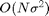 operations or over the Fourier domain in 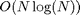 operations. Depending on the value of sigma, one should prefer either Fourier or spatial domain.
defining a Gaussian function, centered at the top left corner (because it corresponds to the 0 point for the FFT).
x = [0:X/2-1, -X/2:-1];
y = [0:Y/2-1, -Y/2:-1];
[y,x] = meshgrid(x,y);
gaussfilt = @(s) exp((-x.^2-y.^2)/(2*s^2));
% see also GAUSSWIN help
define the linear Gaussian filtering over the Fourier domain: this function is able to process in parallel a 3D block F by filtering each F(:,:,i)
gfilter = @(f, s) ...
real(ifft2(fft2(f) .* repmat(fft2(gaussfilt(s)), [1 1 size(f,3)])));
function to build the weight stack 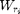 for 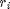 uniformly distributed in [0,1]
gaussian = @(x, sigma) exp( -x.^2 / (2*sigma^2) ); weightmap = @(f, sv, p) ... gaussian( repmat(f, [1 1 p]) - ... repmat( reshape((0:p-1)/(p-1), [1 1 p]) , [size(f,1) size(f,2) 1]), sv );
shortcut to compute the bilateral stack
bilateral_stack_tmp = @(f, sx, W, p) ...
gfilter(W.*repmat(f, [1 1 p]), sx) ./ gfilter(W, sx);
compute the weight stack map: each W(:,:,i) is the map associated to the pixel value r_i
% W = weightmap(I,sigma_r); bilateral_stack = @(f, sx, sv, p) ... bilateral_stack_tmp(f, sx, weightmap(f,sv,p), p);
destacking corresponds to selecting a layer 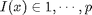 at each pixel: 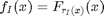 shortcut for de-stacking using a set of indexes:
[y,x] = meshgrid(1:X,1:Y); destacking = @(f,I) f(x + (y-1)*X + (I-1)*X*Y); switch destack case 'nn'
the simplest reconstruction method performs the destacking using the nearest neighbor value:
% shortcut for performing de-stacking by nearest neighbor % interpolation: bilateral_destack = @(S, f, p) destacking(S, round(f*(p-1))+1);
case 'lin'
a better reconstruction is obtained by using a first order linear interpolation to perform the destacking.
% shortcut for the linear interpolation reconstruction. frac = @(x) x - floor(x); lininterp = @(f1, f2, Fr) f1.*(1-Fr) + f2.*Fr; bilateral_lin = @(F, f, p) ... lininterp( destacking(F, clamp(floor(f*(p-1))+1,1,p) ), ... destacking(F, clamp(ceil(f*(p-1))+1,1,p)), ... frac(f*(p-1))); bilateral_destack = @(S, f, p) bilateral_lin(S, f, p);
end
- main computation
rescale the input image in [0,1]
I = rescale(I);
compute the bilateral stack 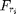
S = bilateral_stack(I, sigma_d, sigma_r, pstack);
compute the bilateral filter
F = bilateral_destack(S, I, pstack);
end % end of bilateralstack_base